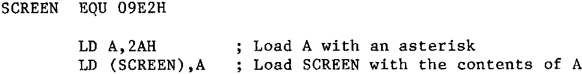
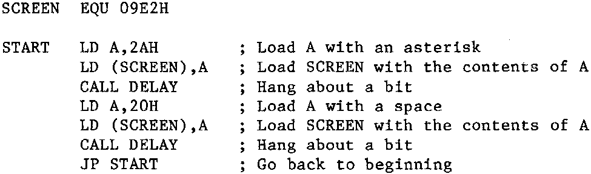

INMC 80 News |
May–September 1981 · Issue 4 |
| Page 47 of 71 |
|---|
Also, I’ve used one variable, 2AH (the H denotes HEX, remember), and one fixed location, 09E2H. Now the 2AH is easy to remember, but the 09E2H is not so manageable. Let’s change the 09E2H to a name of our own devising which will be meaningful. This is known as a label. Now if you are going to use a label to denote a variable, or a location, you should declare it so that you know what it will be. For this we must introduce a new field into the assembler listing known as the label field, and also for convention sake use what is known as an assembler directive. In this instance an equate, abrieviated to ‘EQU’. A brief word about assembler directives. These are instructions in the instruction field which aren’t part of the Z80 instruction set, but are instructions to you or a nice ‘hairy’ piece of machine code known as an assembler (incidently, the semicolon between the instruction and comment fields is also an assembler directive). We won’t persue what an assembler is now, but sticking to conventions is a good idea for later, you’ll see. Another convention used for assemblers is that label names should not exceed six letters, as assemblers won’t look at labels more than six letters long. Another convention is that labels may be alpha-numeric, but should always start with an alphabetic character. A strange effect of using labels starting with an alphabetic character is that some assemblers get confused between labels and addresses starting with an alphabetic character (A to F), so that the address F080H will be mistaken for a label. Some assemblers won’t accept any addresses (or data) starting with a letter, so the above address would have to be written 0F080H for the assembler to know what you were on about.
So now our first part of the mnemonic assembly looks like this.

Lets carry on, we’re going to call the delay subroutine which is further on in the program at address 0D13H, now an address like that is a location, just as the screen location, and just cries out for a label, and an obvious label name presents itself. This time we don’t need an ‘EQU’ as the location will be defined by the position of the routine itself, viz: just after the main routine. Another location defined by its position in the program is the start, so when we come to the ‘jump back to the beginning’ bit, we can again use a label as well.

Now at this point the main routine should have become quite understandable in its own right, even without comments. The labels make the purpose of the routine quite clear. Notice it also follows the order of the specification quite closely. Mind you, labels are a two edged tool. You can make the meaning of a program totally obscure by using obscure label names. I still haven’t figured out how the label name ‘TBCD3’ in Nasbug and NAS-SYS was arrived at (perhaps I’m just dense). I know what the routine does because I made it my business to understand what the mnemonics do, but I challenge anyone to decide the purpose of the label name ‘TBCD3’ without the accompanying mnemonics. Now let’s finish the whole thing off, and add the delay subroutine.
| Page 47 of 71 |
|---|